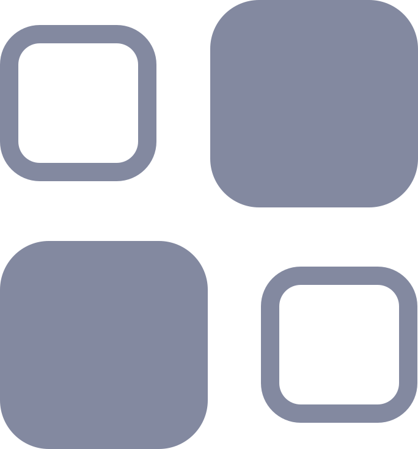

Home
Quiz

Dash
Fórum
Logout
PAPO DO SUBSOLO / QUIZ
UMA NOVA EXPERIÊNCIA SOBRE VOCÊ
Qual alma habita em você?
Cada pessoa carrega algo que a torna única. Suas escolhas, seus valores e a maneira como enxerga o mundo dizem mais sobre você do que imagina.
Descubra qual das sete almas representa sua essência.
SUA JORNADA COMEÇA AQUI
Começar teste
Um pequeno teste de personalidade inspirado em Undertale.
Ínicio
Voltar
1
2
3
4
5
6
7
8
9
10
11
12
13
14
15
16
17
18
19
20
21
22
23
24
25
26
27
28
29
30
1.
2.
3.
4.
5.
6.
7.
SUA JORNADA FOI CONCLUÍDA
Sua alma foi revelada!
A alma que representa sua essência
Refazer teste
Ver Dashboard
Um resultado, sete possibilidades.